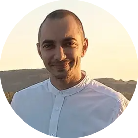

|  |
Andrei OlteanJunior Web Developer I am a passionate junior web developer who enjoys building websites, learning new technologies, and solving problems. I am also a poker enthusiast and former team manager. Find me on Freelancer.com |
I have experience in web and iOS development, a strong interest in Linux system administration, and a background in team management. I am currently focused on expanding my programming and full-stack development skills.